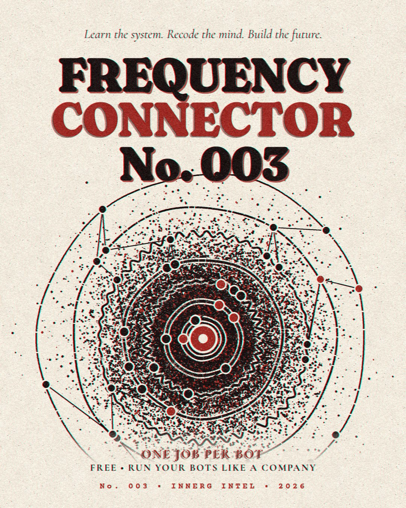
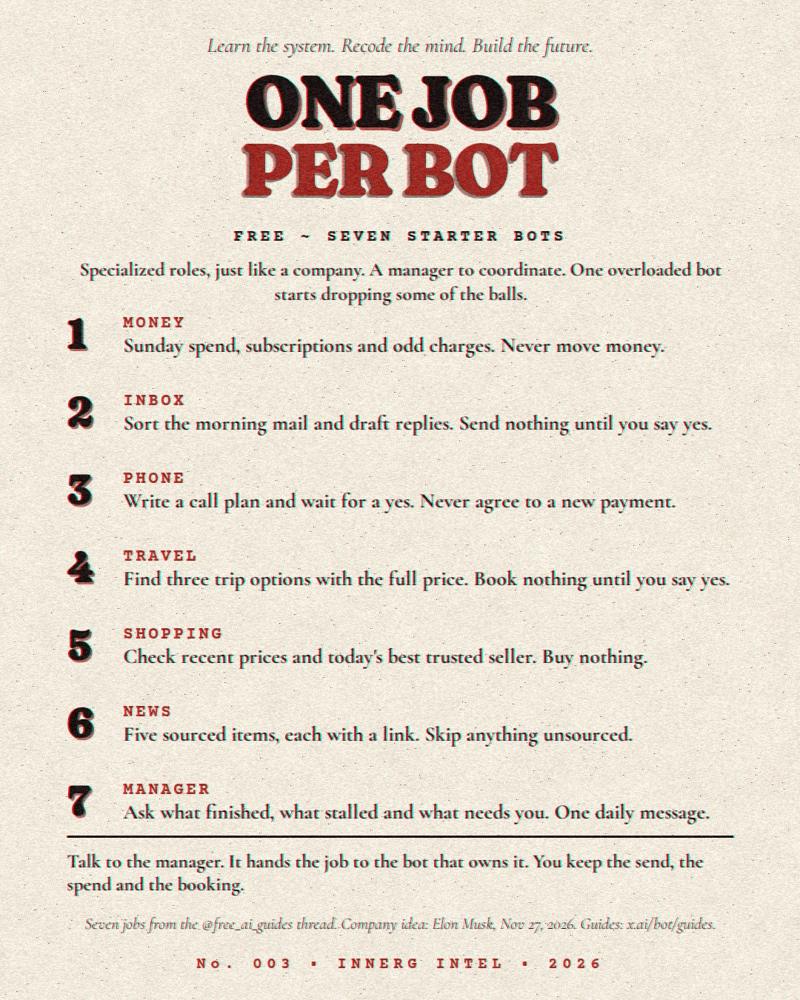

One job per bot.
Run your Grok Bots like a small company. One job each, a manager in charge, and you keep the final call. Free, from INNERG INTEL.
The company idea is from Elon Musk's Nov 27, 2026 post. The seven starter bots are from the @free_ai_guides thread. Product facts are from the official guides at x.ai/bot/guides.

FREE from INNERG INTEL.
Learn the system. Recode the mind. Build the future.
This is a plain-language guide on running Grok Bots like a small company: one job per bot, with a manager bot in charge. It is for members and for anyone curious about Grok Bot use cases.
Where this comes from
On Nov 27, 2026, at 3:32 PM ET, Elon Musk wrote on X:
"When using Grok Bots, it is important to create Bots with specialized roles, just like a human company. You can then have a manager bot oversee and coordinate their work.
Just like a human employee, if you overload a single bot with a massive array of work, it will start dropping some of the balls."
Read his post here: https://x.com/elonmusk/status/2126413886576590925
The next morning, the X account @free_ai_guides posted a free thread that restated that idea in its own words and offered 7 starter bots for personal life, each with a prompt. The seven jobs and the starter instructions in this guide come from that thread, not from Musk's post. Read the thread here: https://x.com/free_ai_guides/status/2126632274439582141
How Grok Bots actually work (job descriptions, routines, handoffs, safety) comes from the official guides at https://x.ai/bot/guides. Frequency Connector No. 002 is the beginner start on those guides.
One job per bot
Do not give one bot every chore in your life. Write each bot a short job description: what it owns, what it will not do, and where it must stop and ask you. The official guides say that last part matters most.
When a bot starts missing steps, the job is too wide. Split it.
The manager bot
The manager's only job is to run the other bots, not to do their work. In the official guides this role is called Bot Boss, Chief of Staff or Project Manager: one front door you talk to, with specialists behind it.
A real example is MARROW, the lead agent for Nasirr "G" Mayo of INNERG INTEL. MARROW's job is to route work, not to do every job itself. Lane bots such as Studio, X Drafts, Market Pulse and Trend Scout each own one job, and MARROW hands work to them.
You do not need a manager on day one. The official guides say to start with one specialist and add a front door once the handoffs are real.
Seven bots for personal life
These seven jobs and starter instructions are from the @free_ai_guides thread. Paste the instruction into the bot's description, then fill in the brackets with your time, your name and your topics. Connect only the tools your Grok Bot actually offers for that job. Keep the send, the spend and the booking for yourself.
1. The Money Bot
One job: your money.
"Your only job is my money. Connect to my bank accounts and cards. Every Sunday, send me what I spent by category, every subscription that charged me and any charge that looks wrong. Never move money and never cancel anything yourself. Save this as a routine."
2. The Inbox Bot
One job: your email.
"Your only job is my email. Every morning at [TIME], sort new emails into three groups: needs a reply today, can wait, and junk. Draft a reply in my tone for each one that needs a reply today. Send nothing until I say yes. Save this as a routine."
3. The Phone Bot
One job: the calls you avoid.
"Your only job is the phone calls I avoid. When I give you a company and what I want, write a call plan and wait for me to say go. Open every call by saying you are an assistant calling for [MY NAME]. Never agree to pay anything new and never give card details. Afterwards, send me what was agreed and the reference number."
Write the plan first and wait for your yes. Only place a live call if your Grok Bot can actually do that. If it cannot, use the plan yourself and have the bot write the recap.
4. The Travel Bot
One job: your trips.
"Your only job is my trips. When I give you dates and a place, find 3 options for flights, a hotel and a rental car, with the full price including fees. Tell me which one you would pick and why. Book nothing until I say yes."
5. The Shopping Bot
One job: checking prices before you buy.
"Your only job is checking prices before I buy. When I send you a product, find its price over the last 90 days and the cheapest trusted seller today. Tell me to buy now or wait. Buy nothing and sign up for nothing."
If a 90-day price history is not available, say so and compare today's trusted sellers instead. Do not invent a number.
6. The News Bot
One job: a short, sourced briefing.
"Your only job is to watch X and the web for [TOPICS I CARE ABOUT]. Every evening, send me the 5 things worth knowing, with a link for each. Skip anything you cannot find a source for. Save this as a routine."
7. The Manager Bot
One job: run the other six.
"Your only job is to manage my other bots: Money, Inbox, Phone, Travel, Shopping and News. Every morning at [TIME], ask each one what it finished, what it could not finish and what is waiting on me. Send me one message with the decisions I need to make today. If a bot keeps missing its job, tell me and suggest how to split its work. Save this as a routine."
How to hand work off
The official guides call handoffs "the one that makes it a team": bots pass work to each other directly, and you see the results and the decisions.
A simple pattern:
- You talk to the manager.
- The manager sends the job to the bot that owns that lane.
- That bot does the work, or says what it could not finish and what is waiting on you.
- The manager sends you one message with the decisions you need to make. You do not have to check seven chats.
If a bot keeps missing its job, the manager should tell you and suggest how to split the work.
A simple setup checklist
- Start with one bot and one job you already repeat. Give it a name, a title and a short description.
- Connect only the tools that job needs. Never type a password into chat. Use the secure form the bot sends you.
- Keep the send for yourself. The bot drafts. You approve anything that spends, books, posts, sends or deletes.
- When the workflow is working, save it as a routine, and leave the new routine off until you turn it on. Most runs should stay quiet.
- When the first bot is doing its job, add the next specialist. Reuse a bot you already have before you create a new one.
- Add the manager once you have more than one specialist and the handoffs are real.
- If a bot starts dropping work, split the job instead of piling on more instructions.
Through the INNERG lens
This part is INNERG INTEL's own framing, not from Musk, the thread or the official guides.
- DEPROGRAM: notice the habit of dumping every task into one chat. Who taught you that one assistant has to do it all?
- RELEARN: read the official guides and learn how a team of bots actually works before you build a big roster.
- RECODE: write one job, one set of stops, and one place the bot must ask you.
- REBUILD: grow a small team you own, with a manager at the front door and you making the final calls.
The goal is the same as every INNERG INTEL connector. You are not here to depend on a bot for answers. You are here to build the capacity to investigate, decide and act. The bot is a tool. You keep thinking.
Stay up to date
Each Frequency Connector carries a number, a version and a "last updated" date. This is No. 003, version 1.0, last updated 2026-11-28, published 2026-11-28.
Credit: Elon Musk's Nov 27, 2026 post is quoted in full above. The seven personal-life bots and their starter instructions are from the @free_ai_guides thread of Nov 28, 2026. Product facts are from the official Grok Bot guides at https://x.ai/bot/guides, written by their listed authors. This page is a short free guide from INNERG INTEL, and is not affiliated with xAI.
One page to keep
Print it or save it to your phone. It is the whole start on one page.
Download the one-pager (JPG) Download the one-pager (PDF)


For your agent
Every Frequency Connector has two sides: this page for you, and a skill for your agent. Install the skill once and your agent works with the same ideas.
Download the skill (.zip) Open SKILL.md
- In Claude, open Customize, then Skills, click +, choose Create skill, then Upload a skill, and pick the zip. Do not unzip it.
- In Grok, ChatGPT or another agent, paste the contents of SKILL.md into your custom instructions, or at the start of a chat.
Or let your agent do it. Copy this and paste it in.
I want the free INNERG Frequency Connector No. 003, One Job Per Bot. Open https://innergclaw.github.io/nas-hub/frequency-connectors/no-003-one-job-per-bot/ , download the skill, and help me install it. Then use it when I ask how to run more than one Grok Bot, set up a manager bot or split an overloaded bot.
Back to all Frequency Connectors
Credit: Elon Musk's Nov 27, 2026 post is quoted in the guide. The seven personal-life bots and their starter instructions are from the @free_ai_guides thread of Nov 28, 2026. Product facts are from the official Grok Bot guides at x.ai/bot/guides, written by their listed authors. This page is a short free guide from INNERG INTEL, and is not affiliated with xAI.